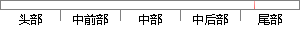

其他的功能在第四章系统测试中就已经进行过测试，这里也不再重复测试。
片段位置图

相似结果|
相似片段 1：进行测试，主要测试系统能不能实现各种功能需求，此外，还需要测试系统的健壮性和稳定性。第三章所述的大部分功能需求的测试在第四章阐述系统的核心功能开发时，实际上已经进行了测试，这里就不再赘述。本章主要对本
相似片段 2： modal如图 5-5所示：图 5-5 上传 Excel modal另外 run即脚本执行页面的按钮功能在第四章图 4-9,4-10,4-11已经展示过了，这里不再测试与展示。
相似片段 3：测试如图 4-40所示：图 4-40 考题管理界面测试图其他具体测试结果界面在 4.3系统的设计和实现里已给出，这里不再详细叙述。54 第四章 英语考试系统设计与实现 硕士研究生学位论文（2）功能测试
|
※ 片段修改建议 ※
近似词参考：- 功能：功效
- 系统：体系
- 已经：已
- 进行：举行
- 不再：再也不
- 重复：反复
系统自动生成语句：其他的功效在第四章体系测试中就已举行过测试，这里也再也不反复测试。
注：本片段修改建议为系统自动生成，仅供参考。